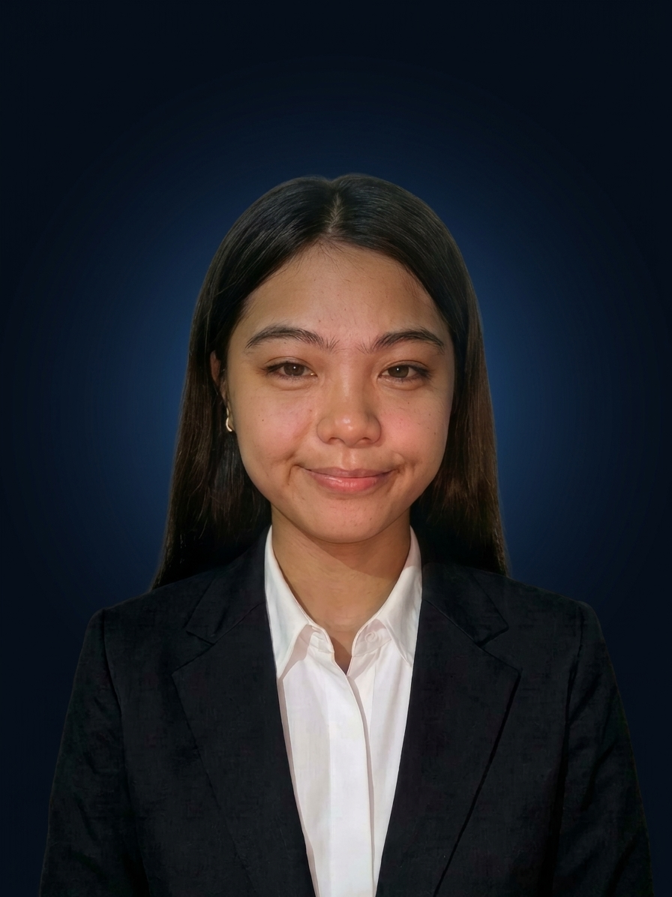

CURRENTLY PURSUING
3rd YearBachelor of Science in Information Technology (BSIT)
Nueva Vizcaya State University · Bayombong, Nueva Vizcaya

HELLO, I'M
3rd Year BSIT Aspiring Software Developer
I’m Shiela May, a third-year BSIT student learning to build useful digital experiences through programming and web design. This portfolio shares my education, growing skills, and project concepts as I continue learning.
01 / ABOUT ME
I’m an IT student at Nueva Vizcaya State University in Bayombong. I’m interested in how software and websites can help solve everyday problems.
I’m developing my programming and frontend skills one step at a time, learning to plan useful features and make interfaces clear and easy to use.
02 / EDUCATION
I am currently pursuing a Bachelor of Science in Information Technology at Nueva Vizcaya State University.
Nueva Vizcaya State University · Bayombong, Nueva Vizcaya
03 / PROJECTS
These are IT project concepts for a frontend portfolio. Replace them with your completed projects when you have built them.
A support portal concept for submitting IT issues and checking request status.
A dashboard concept for tracking computer equipment, quantities, and stock status.
A frontend concept for checking in with QR codes and reviewing attendance records.
04 / FRONTEND TOOLKIT
A few technologies used to create modern websites.
YOUR WORKSPACE
A quick look at your programmer portfolio.
Demo dashboard only. No database or real account login.